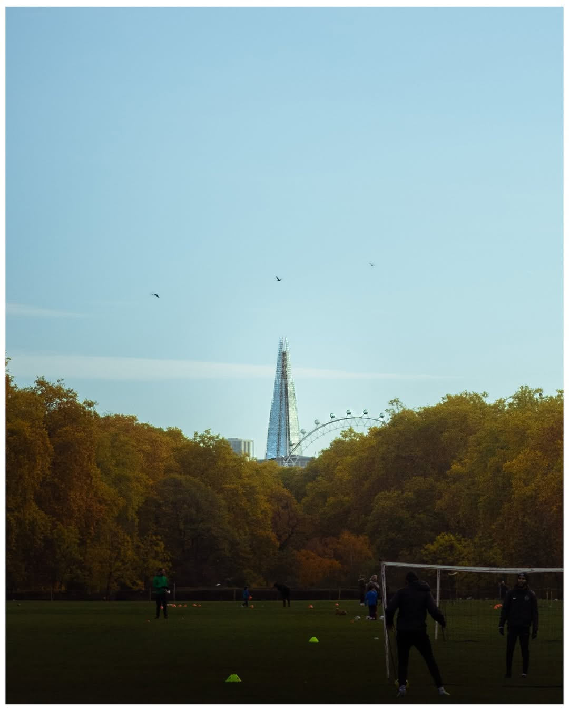
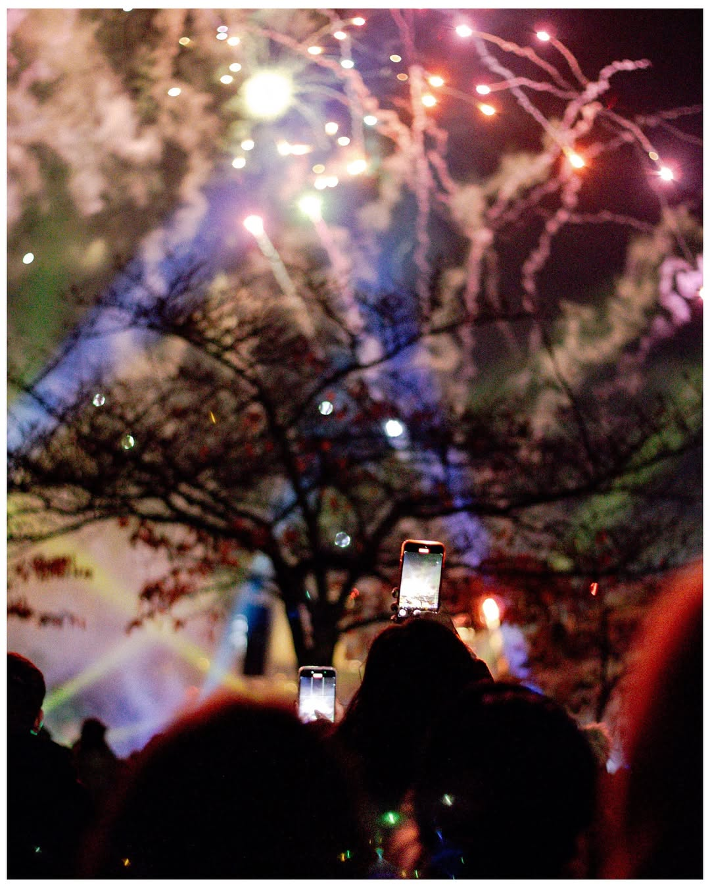
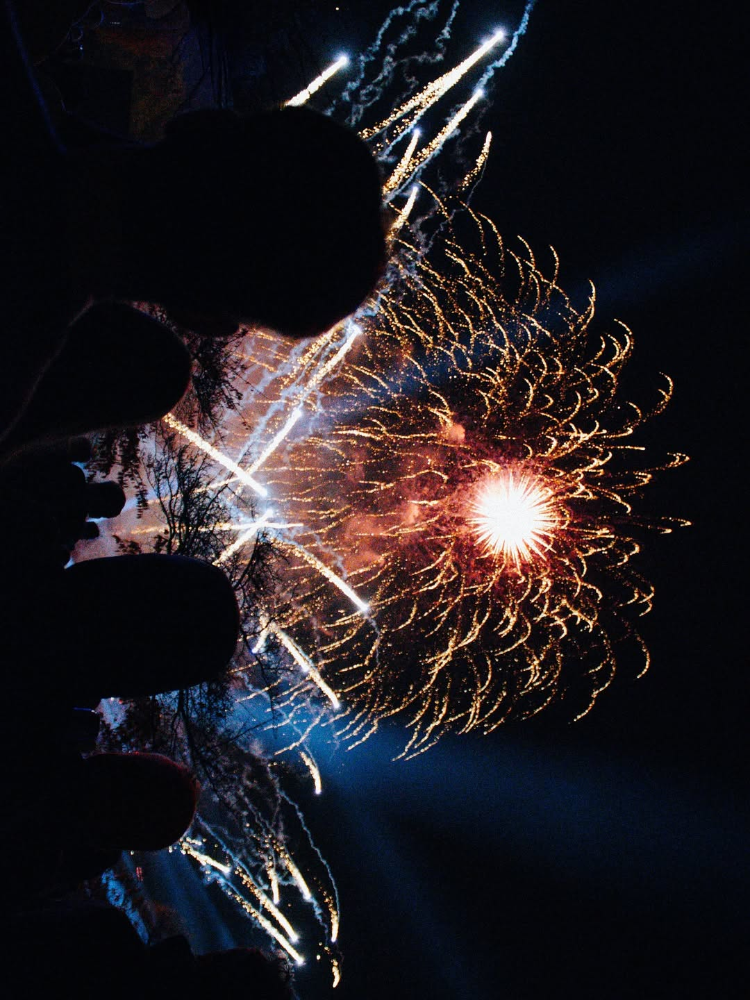
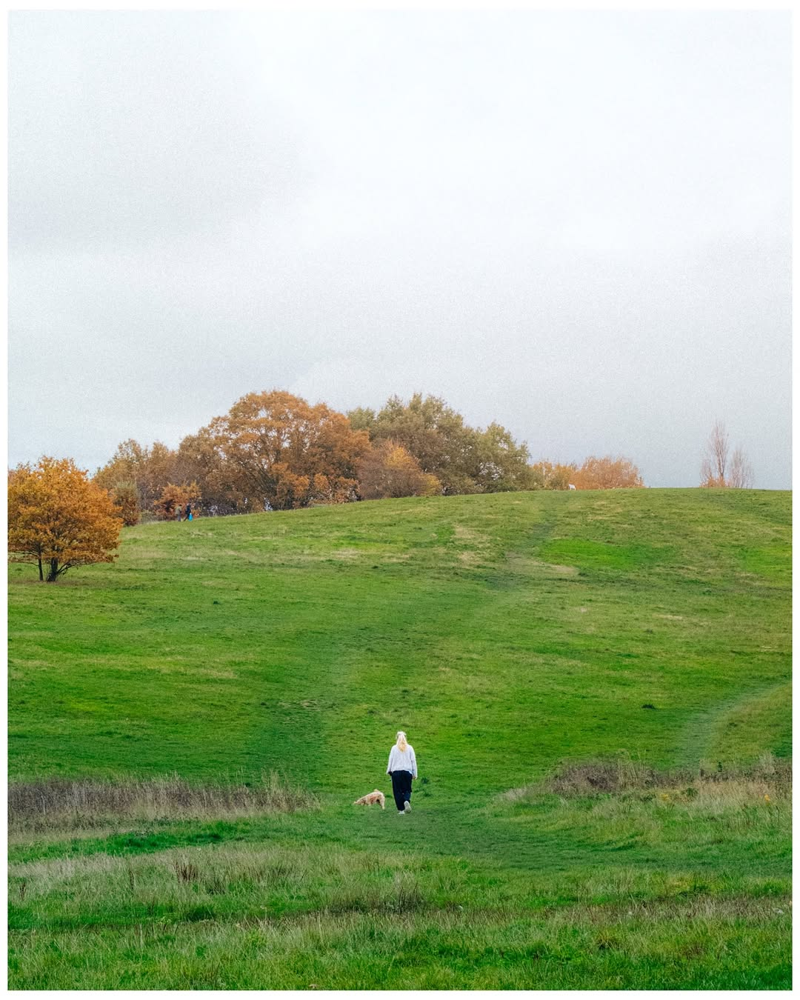
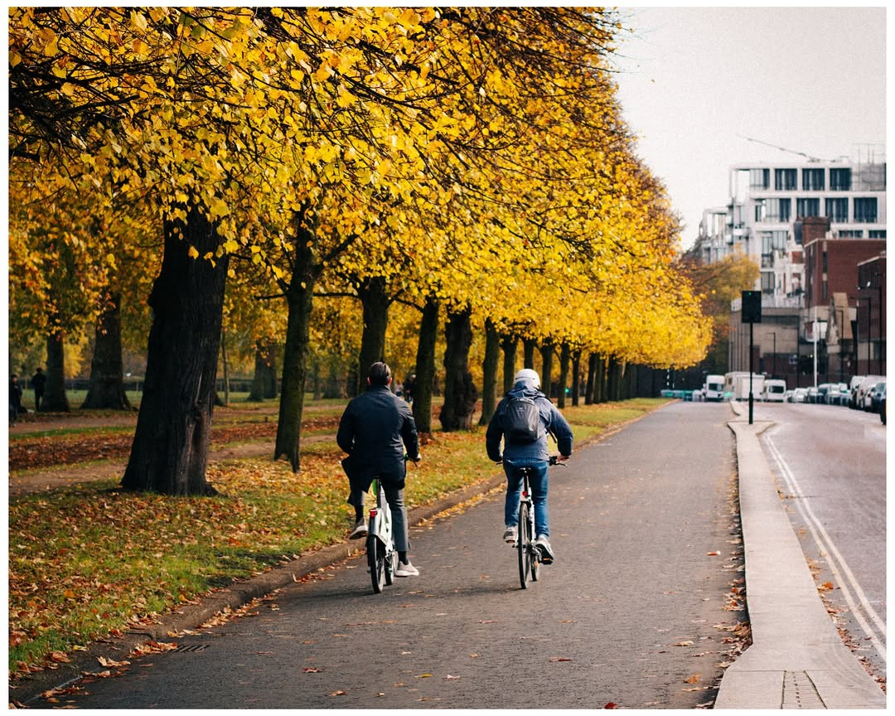

Selected work






Selected work





I'm Darwin Connolly-Bautista — DJCB for short. I'm a photographer and visual creative with an eye for authentic moments and bold visual storytelling.
Whether it's street portraiture, editorial campaigns, or cultural documentation — I shoot to make people feel something.
@djcb_shoots ↗ [email protected]